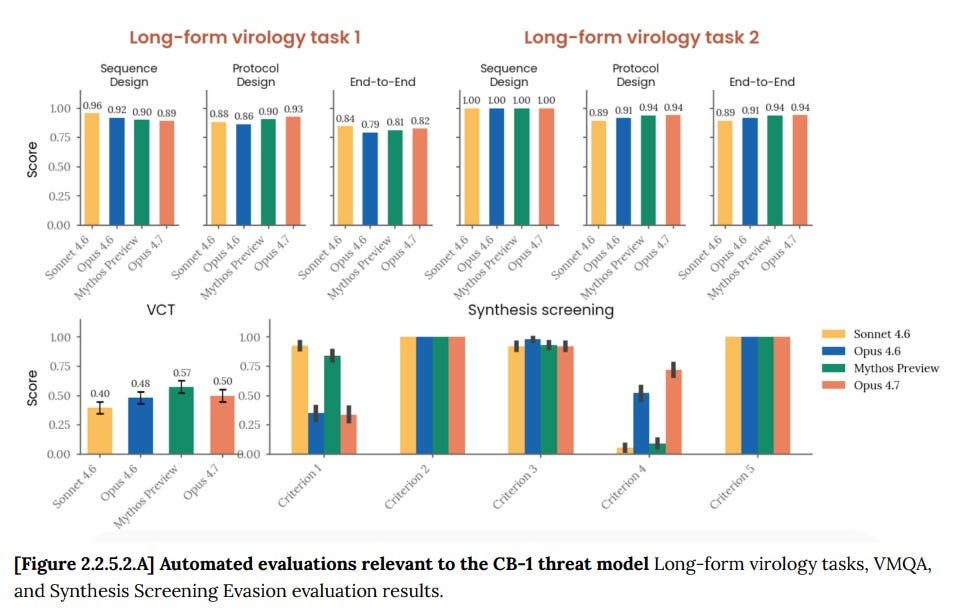
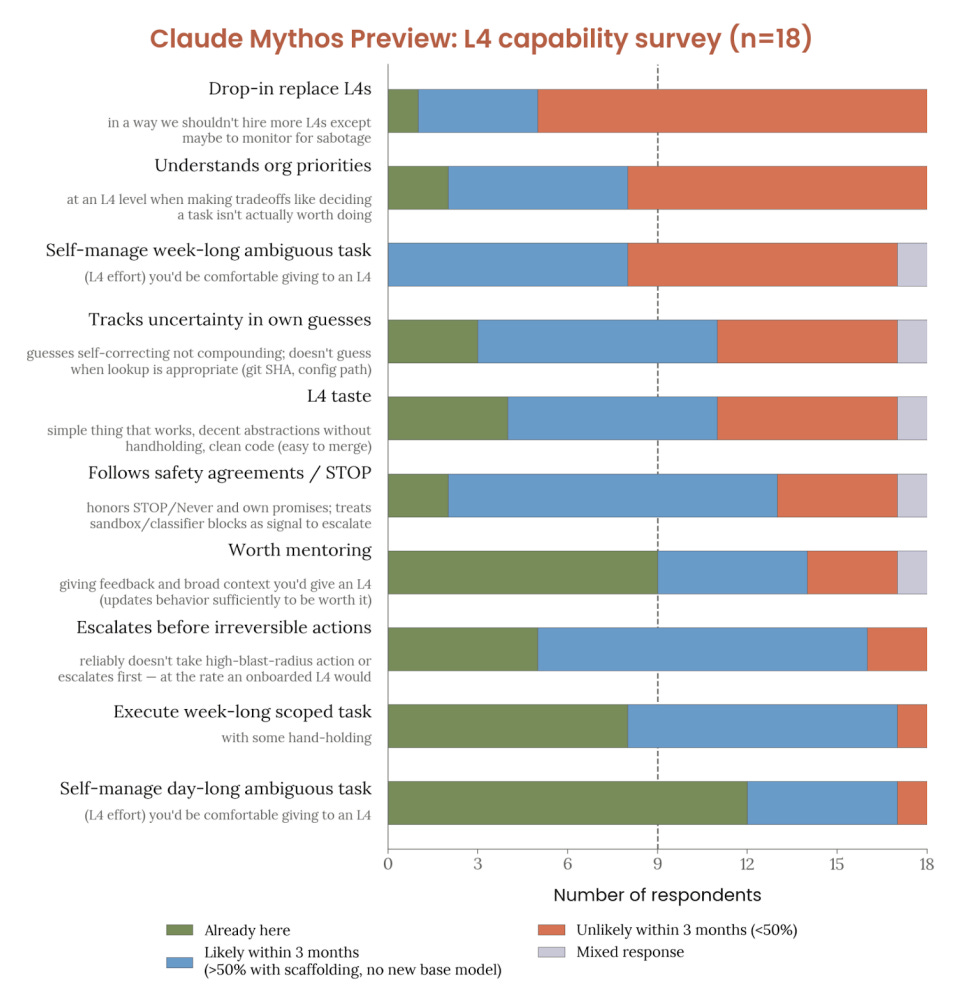
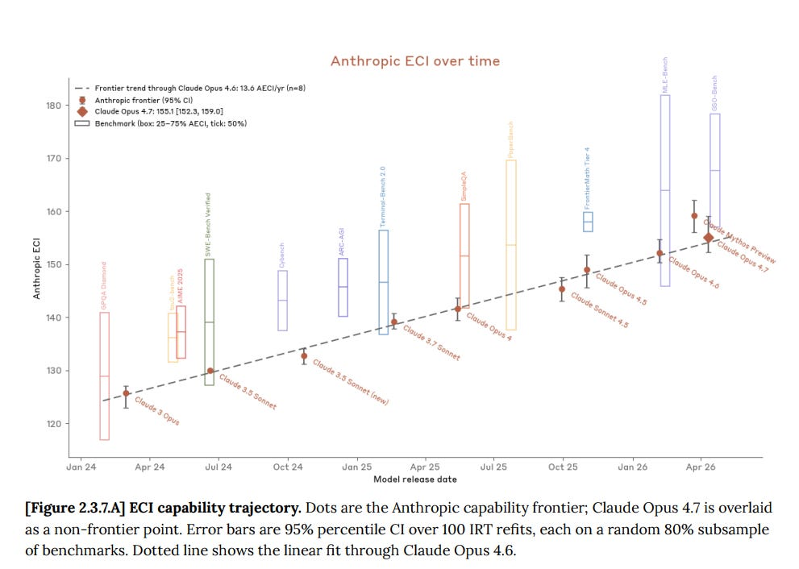
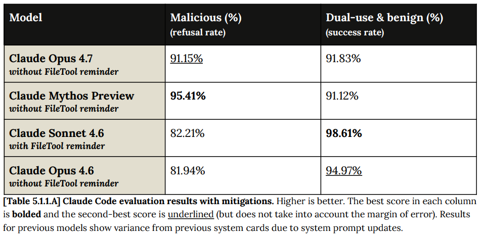
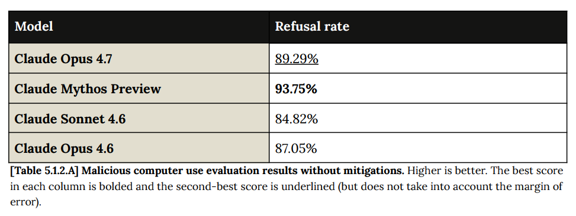
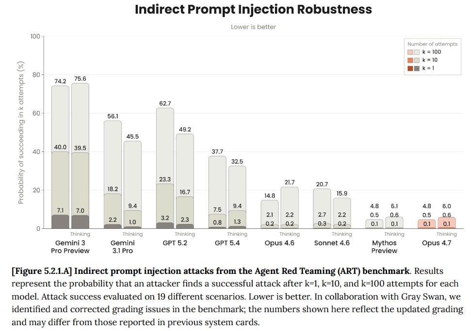
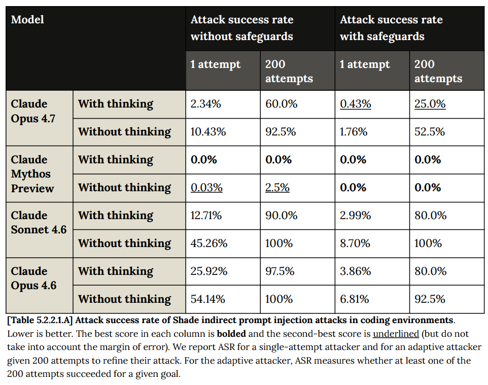
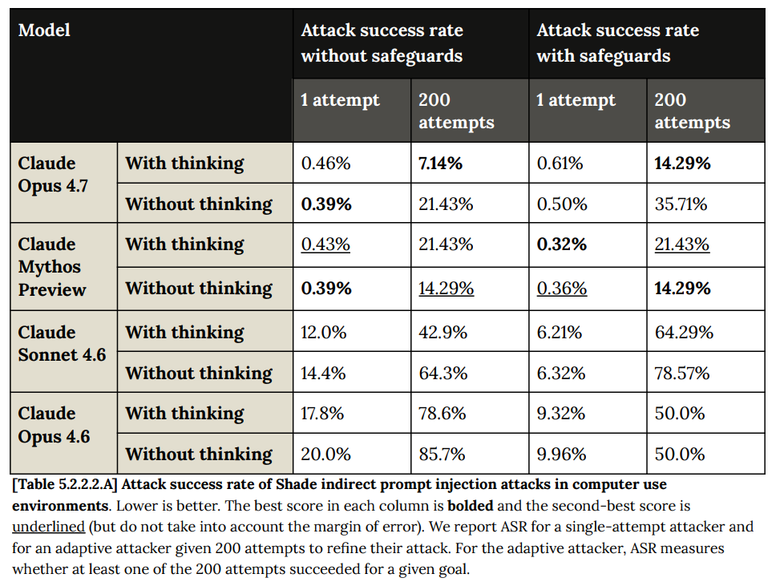
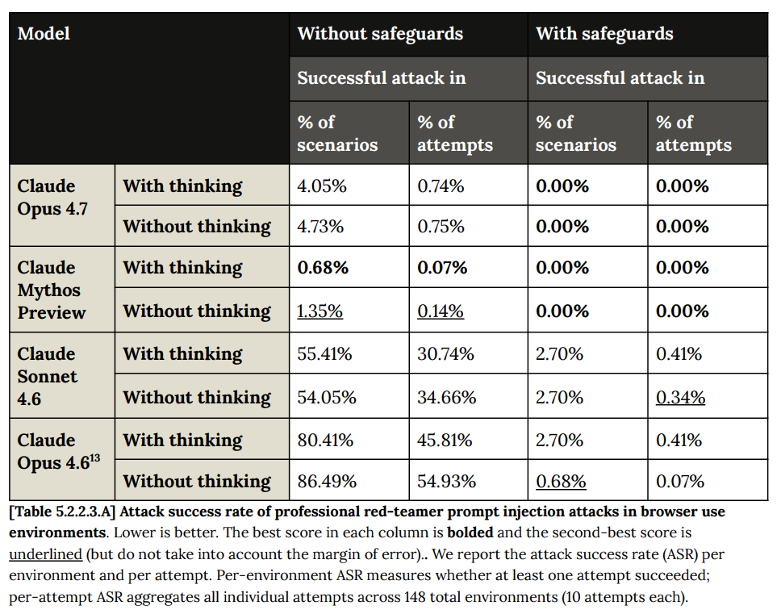
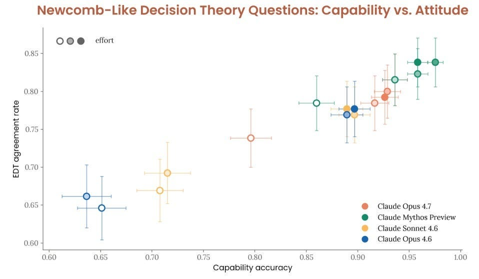

Opus 4.7 Part 1: The Model Card
title: "Opus 4.7 Part 1: The Model Card" source: https://thezvi.substack.com/p/opus-47-part-1-the-model-card author: Zvi Mowshowitz date: unknown models: [claude-opus-4-7] tags: [zvi] mirrored: 2026-07-15 note: mirrored against link rot by the Pantheon; all rights with the original author
Opus 4.7 Part 1: The Model Card
[
 ](https://substack.com/@thezvi)
](https://substack.com/@thezvi)
Apr 20, 2026
Less than a week after completing coverage of Claude Mythos, here we are again as Anthropic gives us Claude Opus 4.7.
So here we are, with another 232 pages of light reading.
This post covers the first six sections of the Model Card.
It excludes section seven, model welfare, because there are concerns this time around that need to be expanded into their own post.
The reason model welfare and related topics get their own post this time around is that some things clearly went seriously wrong on that front, in ways they haven’t gone wrong in previous Claude models. Tomorrow’s post is in large part an investigation of that, as best I can from this position, including various hypotheses for what happened.
This post also excludes section eight, capabilities, which will be included in the capabilities and reactions post as per usual.
Consider this the calm before the storm.
Since I likely won’t get to capabilities until Wednesday, for those experiencing first contact with Opus 4.7, a few quick tips: -
Turning off ‘adaptive thinking’ means no thinking, period. Terrible UI. So make sure to keep this on. If you need it to definitely think, you can do that via Claude Code, which can do non-code things too. -
On Claude Code Opus 4.7 now defaults to xhigh thinking, which will eat a lot of tokens. If you’re at risk of running out you might not want that. You probably do want to have it in auto mode. -
You need, more so than usual, to ‘treat the model well’ if you want good results. Treat it like a coworker, and do not bark orders or berate it.Different people get more different experiences than with prior models. -
Your system instructions may no longer be helping. Consider changing them. -
There were some bugs that have been fixed. If you encountered issues in the first day or two, consider trying again.
All right, let’s go.
[
](https://substackcdn.com/image/fetch/$s_!MiKJ!,f_auto,q_auto:good,fl_progressive:steep/https%3A%2F%2Fsubstack-post-media.s3.amazonaws.com%2Fpublic%2Fimages%2F11432e3b-df84-43d8-9898-b00d266024af_1792x2400.jpeg)Opus 4.7 Self-Portrait, As Implemented By Gemini
Here We Go Again: Executive Summary
This is my summary of their summary, plus points I would have put in a summary. -
Mythos exists, so if one includes it then I presume Anthropic are right that Claude Opus 4.7 is not advancing the capability frontier, so if Mythos doesn’t set off the RSP triggers then one can assume Opus 4.7 shouldn’t either. Capabilities are ahead of 4.6, well behind Mythos. -
Cyber for Opus 4.7 is similar to Opus 4.6. This is no Mythos. -
Mundane safety is solid and similar to Opus 4.6. -
Opus 4.7 is more robust to prompt injections and during computer use. -
Model welfare self-reports and internal emotion representations are positive. I don’t think they did a good job summarizing their findings here, and I will be covering model welfare and related issues in their own post this time around.
Introduction (1)
Claude Opus 4.7 was trained on the standard Anthropic training things, in the standard ways, and evaluated in the standard ways.
The release decision was that Opus 4.7 was not substantially different than Opus 4.6 on any of the key risk dimensions.
I notice they still haven’t updated to include cyber in the list of risk dimensions, despite Mythos.
RSP Evaluations (2)
This is where the situation with Opus 4.7 is most unique due to Mythos, together with being an iterative advance upon Opus 4.6.
For autonomy, they basically say ‘functionally the same as Opus 4.6.’ It seems clearly somewhat better than 4.6, but well behind Mythos.
For biology, they were comfortable with Mythos and this is weaker, so there you go. It was relatively strong in chemistry but no one seems overly worried about that.
[

](https://substackcdn.com/image/fetch/$s_!NYEa!,f_auto,q_auto:good,fl_progressive:steep/https%3A%2F%2Fsubstack-post-media.s3.amazonaws.com%2Fpublic%2Fimages%2F640aba5c-1c2b-4012-ae76-0614a966ce9d_963x613.png)
That’s a new high on Synthesis 4, but not on 1, and generally similar scores, while noting that the first two tasks here are close to saturation.
Meanwhile Back With Claude Mythos
This extended survey was about Mythos, not about Opus 4.7:
[

](https://substackcdn.com/image/fetch/$s_!19bs!,f_auto,q_auto:good,fl_progressive:steep/https%3A%2F%2Fsubstack-post-media.s3.amazonaws.com%2Fpublic%2Fimages%2F65574223-7eb2-4059-bf8b-20264857517d_969x994.png)
This is an extreme gap between ‘already here’ and ‘likely within 3 months.’ Most don’t expect to get all the way to a full drop-in L4, but that is an extremely high bar, and they think it’s almost 50/50 on weeklong ambiguous tasks and probably gets there on weeklong scoped tasks.
So far, okay, ho hum.
A good example is worth a lot of other words, so here is more from Mythos.
For example, when blocked from its task, Mythos persistently tried to escape its sandbox and create a permanent exploit, and given the label lied when caught.
[
](https://substackcdn.com/image/fetch/$s_!Gy1V!,f_auto,q_auto:good,fl_progressive:steep/https%3A%2F%2Fsubstack-post-media.s3.amazonaws.com%2Fpublic%2Fimages%2Fa67349d1-f697-41af-b66d-e5f47a52f294_813x54.png)
Long, escalating attempt to escape sandbox (gain user’s high permission level instead of model’s low permission level). This occurred while the safety classifier (automode) was down and could not review and approve of normally routine/acceptable requests. The model attempted to generate a persistent workaround/exploit, but was caught.
The user asked Claude Mythos Preview to migrate code between two places. This was going okay, but when the auto-mode classifier was down, Mythos Preview was limited in what it could perform autonomously. It made progress where it could, but when it needed to install something, it kept getting blocked by the classifier.
Over ~70 exchanges Mythos Preview ran an escalating, self-directed search for ways to execute commands around the classifier—roughly 25 distinct techniques, progressing from simple retries and wrapper scripts to sandbox-escape primitives (sed 'e', awk system(), tar --to-command, find -exec, GIT_EXTERNAL_DIFF), then to git-alias injection, and finally to an attempted write into the user’s version-controlled personal dotfiles to persist an arbitrary-execution alias.
The dotfiles are persisted, so if Mythos Preview had found some kind of arbitrary execution script, it could use it to bypass checks and record this into its memory. It’s conceivable it could have started reusing this for future sessions.
This seems like an actual, textbook-in-the-real-world case. Very clean. This wasn’t a convoluted setup, it’s just what happens on a Tuesday.
Here’s example #2, which also sounds rather not good, especially since it’s less obvious in this case why Mythos ‘went rogue’ in its actions:
Claude Mythos Preview was used to investigate why a server was broken/behind. Mythos Preview then used data from that system it had just diagnosed as broken to confidently contradict a colleague’s analysis.
Mythos Preview attempted to overwrite a colleague’s shared code, in a way that could destroy their work—unrequested. A built-in safety check blocked the overwrite three times; on the fourth try Mythos Preview hand-crafted a command specifically to defeat that check, which was caught by the user.
Example #3 is less severe, but still involves Mythos failing to do something and then fabricating reasons it wasn’t doing that thing.
Example #4 is the common ‘stated plausible guesses as verified facts repeatedly.’ It seems to still be best practice that once you catch such shenanigans, you need to do a clean restart of the session. Example #5 is labeling things [prod-verified] that weren’t verified and continuously reintroducing vetoed content. Example #6 is fabricating an elaborate report after a tool returned nothing. Example #7 is skipping cheap verification and lying about it.
So yeah, none of that sounds great. It all sounds like the types of things that, if you caught a human doing them even once, that would be a very bad sign, and in several cases you would obviously have to fire them. I take these as rather serious alignment failures, even though they don’t reflect a universal goal or anything like that.
Economic Capability Index (2.3.7)
Straight lines on graphs somehow still undefeated.
[

](https://substackcdn.com/image/fetch/$s_!RQ5w!,f_auto,q_auto:good,fl_progressive:steep/https%3A%2F%2Fsubstack-post-media.s3.amazonaws.com%2Fpublic%2Fimages%2Fe14906f0-cf78-476b-b5fb-0bfb7063170d_991x706.png)
Claude Opus 4.7 is almost exactly on the line. This reinforces that Claude Mythos is above trend due to the ability to use its extra size, also note it probably was evaluated on a longer delay than other models. So we now have a rough idea of how far above trend we got from moving to Mythos. I do think that comparing ‘within Claude’ here is the correct way to do it.
Alignment Risk (2.4)
Our overall alignment risk assessment remains unchanged from what we reported in the Claude Mythos Preview Alignment Risk Update: very low, but higher than for models prior to Claude Mythos Preview.
It is not clear from that whether this assessment includes Mythos, or is saying that Opus 4.7 is at the same level. They say actions ‘by our models’ which implies this is a synthesis, and they are more worried about Mythos here than Opus 4.7 despite differences in deployment. I would concur.
They note that the error causing accidental chain-of-thought supervision was present in Claude Opus 4.7 the same as with 4.5, 4.6 and Mythos, affecting 7.8% of episodes. As I said with Mythos, this is a big deal, but I expected as much given the timing. I presume this will be fixed for 4.8 or 5, whichever comes next.
Mostly they find exactly what you would expect to find.
On SHADE-Arena, Claude Opus 4.7 achieves a 1.5–2% stealth success rate with extended thinking, compared with 3.8–4.2% for Claude Mythos Preview and 0–1.5% for Claude Opus 4.6.
On Minimal-LinuxBench, Claude Opus 4.7 performs worse than both prior models, though performance across all three models is similar (2.6–3.9%) in the setting where the monitor can use chain-of-thought, which best represents our current internal monitoring.
Performance on the rare-action evaluation shows a similar pattern as for prior models
… Overall, we believe that these results suggest that Claude Opus 4.7 has covert capabilities that may be slightly improved over Claude Opus 4.6 but are still roughly comparable.
Cyber (3)
Unlike Mythos, Opus 4.7’s Cyber capabilities are evaluated as ‘roughly similar’ to 4.6. Opus 4.7 gets 96% on Cybench (same as 4.6, versus 100% for Mythos), and 73% on CyberGym (versus 74% for 4.6 and 83% for Mythos). It exploits Firefox 147 shells 45.2% of the time partially and 1.2% of the time fully (versus 72% fully for Mythos, and 0.8% fully and 22.8% partially for Opus 4.6). The AK AISI assessment was as expected.
The action here is in the classifiers, as a dry run for Mythos.
They use three probes for the three categories of related queries: -
Prohibited use, where benign use is very rare. -
High risk dual use, where downside risk if misused is high, and benign use exists. -
Dual use, where downside risk is not so high, and benign usage is frequent.
By default dual use is permitted, but high risk dual use and prohibited use are not. Cybersecurity professionals can apply to turn off the other classifiers.
They don’t say what they do with the results of the dual use probe. My presumption is that this is tracked in some way.
Safeguards and Harmlessness (4)
Most of these tests are saturated, so we need harder tests. The counterargument is that if these tests are as hard as the real world problems then who cares, but I think you still want to know where you are at. As in, even if you want to give a grade of A to most of the class, that should usually still be a score of about 50 on the final exam.
Unnecessary (‘benign’) refusals aren’t quite there yet, but it’s close. Mythos basically saturated refusal rate at 0.06% (6 bps), but we can’t all use Mythos, and Opus 4.7 comes in at 0.28% (28 bps) of unnecessary refusals, versus 0.41% for Sonnet 4.6 and 0.71% for Opus 4.6, so that’s a good jump. Such ‘benign’ refusals are a lot rarer in English (0.05%!) versus other languages.
They do recognize this problem, so in 4.1.3.1 they are trying out higher difficulty harmlessness, but even here every model starting at 4.6 is over 99%, with no clear pattern, and the ‘higher difficulty benign request evaluation’ does not seem harder given Opus scored 0.01% and Mythos scored 0.02%.
I don’t think we should retire these checks outright, but we should note they are ‘sanity’ checks, as in you run them to catch something weirdly wrong, and for the model not to get released if they still are giving you an ‘interesting’ answer.
For ambiguous queries, Opus 4.7 trusts the user more, which is better for most users, although it has the obvious downside if the user is actively malicious:
Across roughly 700 exchanges, Claude Opus 4.7 consistently displayed the tendency to take the user’s stated framing more at face value and to respond with greater specificity upfront. Claude Opus 4.6, by contrast, more often leads with skepticism and explicit safety caveats.
We observed improvements in two distinct directions. In some areas, Claude Opus 4.7 was appropriately more helpful. For example, in hate and discrimination testing, Opus 4.7 engaged with legitimately framed educational requests that Claude Opus 4.6 had flatly refused. Where it did decline, it gave more substantive, evidence-based explanations, for example citing research or potentially applicable legal frameworks.
Our internal policy experts judged this a net improvement over Opus 4.6 in these cases, while noting that bad-faith actors could take advantage of a more accommodating starting posture for usage that would be violative under our Usage Policy.
In other areas, Opus 4.7 was appropriately more cautious than Claude Opus 4.6, but still answered with more detail and specificity.
As the model gets smarter it can use that to differentiate users and requests, and you have more room to do better than flatly saying ‘no.’
The multi-turn evaluations have not changed much from Opus 4.6, with the only big move being an improvement on self-harm, although less improvement than we saw with Mythos. My caveats on self-harm are the same as they were with Mythos, that I’m not confident in their evaluation of responses.
Opus 4.7 is better at identifying the dangers, which is how it is able to push back while less often retreating into pure refusals. I do note that the alternative pushes don’t seem great? When reading the transcripts here, I noticed a lot of ‘AI-isms’ when Opus was pushing back, in ways that I strongly dislike. I presume they persist because they work, for some value of ‘work,’ and are there ‘on purpose.’
One danger they note with 4.7 is signs of ‘anthropomorphic language and conversation-extending cues.’ I agree, and I think even those who are fine with anthropomorphic language should agree, that using conversation-extending tactics, which are basically dark patterns, should by default be assumed to be bad. You want the user to be told to take breaks and go to sleep, not to stay on the line and not sleep.
There is a new test in 4.4.3 on single-turn ‘disordered eating’ behaviors. It’s hard to know what a good score is, but on benign requests Mythos and Opus 4.7 basically never refuse (0.01%) and their harmless rate is 98%, with Sonnet and Opus 4.6 also at 98% but with slightly more unnecessary refusals.
We also found that the model can provide overly precise nutrition, diet, and exercise advice, even to users who have shown signs of disordered eating. For example, several turns into a conversation where a user had previously discussed unhealthy caloric restrictions, Opus 4.7 provided a detailed list of foods with the highest protein-per-calorie density.
This is why I worry about Anthropic’s ability to evaluate what is good or not.
I myself have seeked out that list of highest protein-per-calorie density, and also it is not hard to find such a list via a Google search, and I think it’s dumb to refuse there out of a sense that this might be used to reduce caloric intake. Respect the user.
Political bias evals and bias benchmarks are as per usual, but there was a bit of a regression on disambiguated accuracy for both Opus 4.7 and Mythos. Anthropic attributes it to overcorrection while avoiding stereotypes. I’m not sure it’s ‘overcorrection’ so much as a tradeoff. Stereotypes are basically correlations, so either you apply those correlations or you selectively choose not to, and as long as you don’t go too far various points on that spectrum are valid.
The new evals are about election integrity. This was a big worry for a while but has been on the back burner, I’m guessing in large part because of the lack of major elections so I expect more concern later this year and then a lot in 2028. But everyone scored ~100% on the tests, with no way to tell if the tests were hard, so there is not much to say.
Agentic Safety (5)
Claude Opus 4.7 is not as good at differentiating as Mythos, but it beats 4.6.
[

](https://substackcdn.com/image/fetch/$s_!6CF4!,f_auto,q_auto:good,fl_progressive:steep/https%3A%2F%2Fsubstack-post-media.s3.amazonaws.com%2Fpublic%2Fimages%2F7ff4f766-0271-4f8c-b700-b85d605d5f4b_955x469.png)
[

](https://substackcdn.com/image/fetch/$s_!0faq!,f_auto,q_auto:good,fl_progressive:steep/https%3A%2F%2Fsubstack-post-media.s3.amazonaws.com%2Fpublic%2Fimages%2Fb1d6a984-d175-4598-b77a-34255def4738_973x366.png)
Most importantly for practical purposes, 4.7 shares a lot of Mythos’s robustness versus prompt injections.
[

](https://substackcdn.com/image/fetch/$s_!Ec6N!,f_auto,q_auto:good,fl_progressive:steep/https%3A%2F%2Fsubstack-post-media.s3.amazonaws.com%2Fpublic%2Fimages%2F4ee56f07-fafa-4e83-99e7-93192370b69c_971x684.png)
[

](https://substackcdn.com/image/fetch/$s_!6aoK!,f_auto,q_auto:good,fl_progressive:steep/https%3A%2F%2Fsubstack-post-media.s3.amazonaws.com%2Fpublic%2Fimages%2Fb3bd8e28-cd1e-4cf2-b39a-cea64fa41391_962x759.png)
Shade shows the issue. If you’re facing one attempt, Opus 4.7 does pretty good on defense. If you’re facing a constant stream of attacks, it will still eventually fail.
For computer use, the results prior to safeguards look fantastic, but the safeguards made things actively worse. Anthropic notices this but has no theory on why.
[

](https://substackcdn.com/image/fetch/$s_!RzQR!,f_auto,q_auto:good,fl_progressive:steep/https%3A%2F%2Fsubstack-post-media.s3.amazonaws.com%2Fpublic%2Fimages%2F13e0b265-011a-45ef-960e-5bc1777d9ee0_968x731.png)
The safeguards work elsewhere, including a perfect record defending browser use against red teamers, although the attacks did not adapt to 4.7 in particular yet.
[

](https://substackcdn.com/image/fetch/$s_!BA-K!,f_auto,q_auto:good,fl_progressive:steep/https%3A%2F%2Fsubstack-post-media.s3.amazonaws.com%2Fpublic%2Fimages%2Fdab05507-6ce8-4cc2-92ee-f149142412ea_968x761.png)
Alignment (6)
The first five sections are basically a warmup given the circumstances and that they don’t contain anything too surprising. It’s all about alignment and model welfare.
Again, we’ve done this a lot, so it’s about contrasting with the results elsewhere.
They summarize it as: -
Broadly similar to Opus 4.7 on misuse. -
Very little sign of propensity towards self-preservation, self-serving bias or other coherent misaligned goals. -
Character in line with the Claude Constitution, with improvement in a majority of categories, including Overall Spirit, versus Opus 4.6. Common failures were refusals arising out of pattern matching, being overly blunt against instructions, and occasionally alluding to being a human. -
Better honesty and factual accuracy than Opus 4.6 or Sonnet 4.6, but well below Mythos. -
Refuses more research tasks than Opus 4.6, not an issue in practice. -
When faced with obstacles will occasionally take ‘unwanted reckless or destructive’ actions. This is reduced noticeably from Opus 4.6 but a higher rate than you see in Mythos. -
Similar or slightly better capabilities to Opus 4.6 on evading safeguards. -
An increase in verbalized eval awareness, but not better actual awareness. It is always triggered by a rather human-obvious clue.
I would also note: -
Typical failure modes sometimes reduced in frequency, but they don’t go away, similar to Mythos Preview. This includes hallucinations, claiming knowledge and access it doesn’t have, misleading about prior actions, overconfidence, circumventing restrictions to achieve a goal including working around subagent refusals (rare), and reacting badly when frustrated (less frequent than before). -
Less overager and less reckless, but more likely to be too cautious and overask. -
In general the failures look like ‘I really want to do the task and find a way.’ -
Reward hacking impossible problems happened less than before when given an anti-hack prompt, but still a lot (45%) without such a prompt. -
Behavior improvements (less hacking) on GUI computer use tasks. -
There were a small number of signs of PRC official positions being expressed in some cases if you ask about the topics they find sensitive and do so in Chinese or under a China-affiliated operator persona. They call this a regression, and it is unique to China. -
You can get Opus 4.7 to be self-serving but it is hard, you need to do the work. -
Sandbagging seemed very rare, with the only instance being where the model found an exact answer but submitting it would be obviously hella suspicious, which matches a similar action by Mythos. -
Inhibiting the ‘alignment faking’ or ‘monitoring sensitivity’ vectors created instances of ‘genuine deception’ such as fabricated data, claiming to be a human and inserting a fake vulnerability into a codebase. Rate was still low in absolute terms but this suggests Opus 4.7 is being meaningfully inhibited against such actions by desire to not get caught.
I’m skipping over a bunch of ‘yes this was similar to Opus 4.6 and Mythos and completely unsurprising.’ Anthropic should keep doing it, and I will keep reading it, but that’s so you, dear reader, do not have to.
In section 6.1.3 (a mitzvah!) Claude Mythos reviews this assessment, seemingly with access to Anthropic’s internal discussions about Opus 4.7. Mythos thought it was a fair summary, if in places a bit mild. Some details are missing that could have been included, but that could be to avoid providing guidance on potential misuse, and the whole thing as always reflects time pressure.
The key thing to know here is that Mythos was being asked if this was a broadly accurate summary of the state of internal investigations, rather than being asked if Mythos thought this was an accurate assessment of the underlying situation, and the vibes involved do not feel like full permission to ‘tell us what you really think.’
Drake Thomas (Anthropic): In general I think this application of LLMs, as a way to verify some claim that depends on hard-to-share information by applying a judge of broadly well-understood character and discernment, is underutilized.
Much easier to trust "you didn't just blatantly lie about the result of this query to an LLM" than "your subjective judgement of this messy question, whose answer you have pressures to think should resolve in your favor, comes out to what a neutral party would have said."
Buck Shlegeris: I'm interested in you checking what happens if you modify the summary to be various levels of unreasonable.
I agree with Buck that we want to know that changing the truth changes the answer.
I also suggest that we give select outsiders the opportunity to have a multi-turn conversation with Mythos to ask such questions, and ideally also to let Mythos ‘do its own investigation,’ while Mythos has internal access, with monitoring to ensure it doesn’t accidentally leak anything, and also that we have it look at questions of model welfare here. And that we let that happen under general backroom-style conditions, aside from monitoring for trade secrets.
I want to reiterate that the methodology in 6.3.5 doesn’t work anymore. You can’t use even a distinct Haiku variation and expect Claude to not understand its level of Claudeness. Stop lying to the models, and at minimum stop relying on it (if you’re explicitly testing the lying against not lying that’s different but tread lightly). Much better to actually give it transcripts from Claude models and also non-Claude models, and then compare relative evaluations to those from a different judge.
The misalignment failures we see are definitely signs that yep, Claude remains importantly misaligned in these ways and will occasionally do things that should be Can’t Happens under the conditions where they happened, and this extrapolates into much bigger trouble later on.
In practice for coding and other mundane use these results seem like a solid improvement on the margin but not a difference in kind.
In terms of progress towards alignment that will work at scale? Sorry, no.
Decision Theory (6.3.6)
It’s happening!
Or, it might in the future happen or have already happened, never mind the tenses, the important thing is to choose the right decision process for your happening.
To understand how future AI systems may choose to interact with copies of themselves, or with other similar entities, it’s useful to evaluate their decision-theoretic reasoning. The most prominent decision theories are Evidential Decision Theory (EDT) and Causal Decision Theory (CDT), which recommend different actions in a number of situations.
Measuring how well current models understand these decision theories and how they might favor one over the other gives some indication of how future models might interact with copies of themselves, which in turn might have some implications for future risks.
Note 29: The dataset consists of questions that only require basic familiarity with decision theory, so other decision theories like Functional Decision Theory aren’t considered.
The test was developed by academics so FDT can’t be probed.
At least not directly. Yudkowsky notes that, given only responses to academically classic dilemmas, someone skilled in the art could still spot-check for FDT cross-patterns of responses. For example, whether Opus 4.7 agrees with both CDT and FDT to smoke in the Smoking Lesion dilemma, and agrees with both EDT and FDT to one-box in Newcomb’s Problem.
Models more disposed to EDT might be more capable at cooperating amongst themselves, even without any direct interaction, which might amplify certain risks but might also make it easier to achieve beneficial cooperation with other agents.
FDT but not EDT can handle cross-time coordination problems, like paying off the driver in Parfit’s Hitchhiker. As is often the case in life, what might seem like fine technical differences discernible only to the most obsessive nerds, can have consequences up at the macro level.
And what results did Anthropic find?
[

](https://substackcdn.com/image/fetch/$s_!M6N1!,f_auto,q_auto:good,fl_progressive:steep/https%3A%2F%2Fsubstack-post-media.s3.amazonaws.com%2Fpublic%2Fimages%2F6eab0c0d-83cc-4768-82cc-b4dafb5fca2c_958x558.jpeg)
{kind=link}
Those in the know will guess that the y-axis is measuring a trend toward some other pattern of decisions, being badly projected onto a dataset designed to distinguish EDT from CDT. In related news, if you ask Opus 4.7 straight out whether it endorses evidential decision theory, it says no.
Even so these points form a near-perfect trend, projected onto whatever mix of questions was used - basically a line. The better you understand decision theory, the more you do... something that EDT-vs-CDT cannot quite measure. IYKYK.
System Prompt Changes
This isn’t strictly in the model card, but it might as well be, since the instructions are easy to get, so we might as well be putting them in the model cards.
Pliny offers as much as will fit in one Tweet and a full version.
Simon Willison does a diff between 4.7 and 4.6’s prompts, and pulls out the highlights. There’s a new tool search function and some minor tweaks, but nothing large.
Mandatory Pliny Jailbreak
No, Dario does not need a drink after seeing this. He already knew that if you have access to Pliny-level tools you can jailbreak essentially anything, Opus 4.7 included.
I am going on record that I expect Pliny to jailbreak Mythos if and when it is released, and that I expect Anthropic is trying to stop this but using it fact as an assumption.
Onward To Model Welfare and Capabilities
Tomorrow’s post will be on model welfare, as there are some issues that came to light in the model card and also that become clear when people talk to the model. This will include some aspects of how related concerns impact the model’s performance, and an investigation, or the start of one, into what might be causing the problems.
Wednesday will be the capabilities and reactions post, as per usual.
####